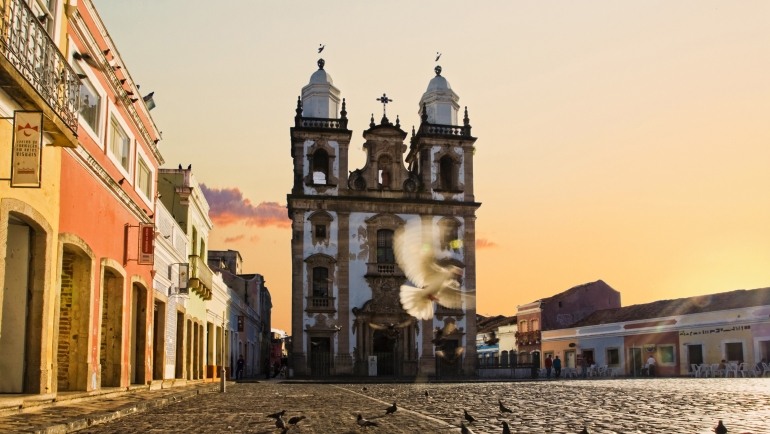
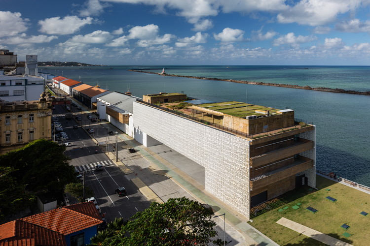

O bairro do Recife Antigo é um lugar repleto de história e cultura. Suas ruas de pedra, casarões coloridos e igrejas antigas contam a história da cidade.
Um dos destaques do Recife Antigo é o Pátio de São Pedro, uma praça cercada por bares, restaurantes e uma igreja do século XVIII. É um local popular para apresentações culturais e festas.
Outro ponto imperdível é o Centro Cultural Cais do Sertão, um museu que homenageia o famoso músico Luiz Gonzaga e explora a cultura do sertão nordestino.
